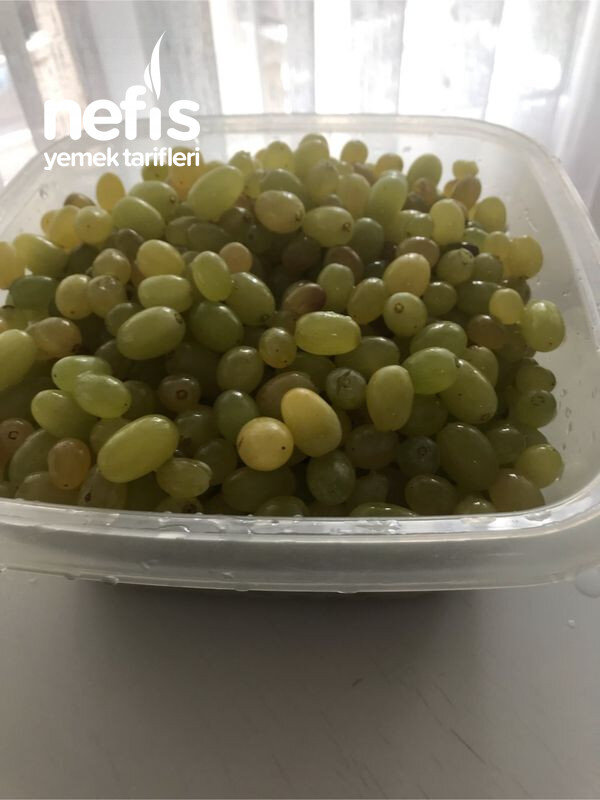

🍽️ 12-14 kişilik⏱️ Hazırlık: 30 dk🔥 Pişirme: 20 dk🏷️ Diğer Tarifler🏷️ Kış Hazırlıkları
Malzemeler
- 2,5 kg tane üzüm
- 4 kaşık nişasta
- 1 bardak kadar su
Hazırlanışı
- Üzümleri yıkayıp ayıklıyoruz.
- Blenderden geçirip makarna süzgüsünden geçiriyoruz.
- Tekrar ince süzgüden geçiriyoruz.
- 2 lt üzüm suyu elde ettim.
- Tencereye koyup kaynatıyoruz.
- Kaynamaya başladıktan 15-20 dakika sonra nişastayla suyu açıp kaynamakta olan üzüm şırasına döküyoruz.
- 5-6 dakika karıştırarak pişiriyoruz.
- Fırın kağıdı koyduğumuz tepkilere dökerek eşit dağıtmaya çalışıyoruz.
- Güneşte kurumasını bekliyoruz.
- Elimize kuru geldiğinde olmuş demektir.
- İstenirse içine ceviz serpeleyerek şekil veriyoruz.
- Rulo veya üçgen şekiller verebiliriz.
- Buzdolabına kaldırıp istediğimiz zaman tüketiyoruz.Afiyet olsun 😊.